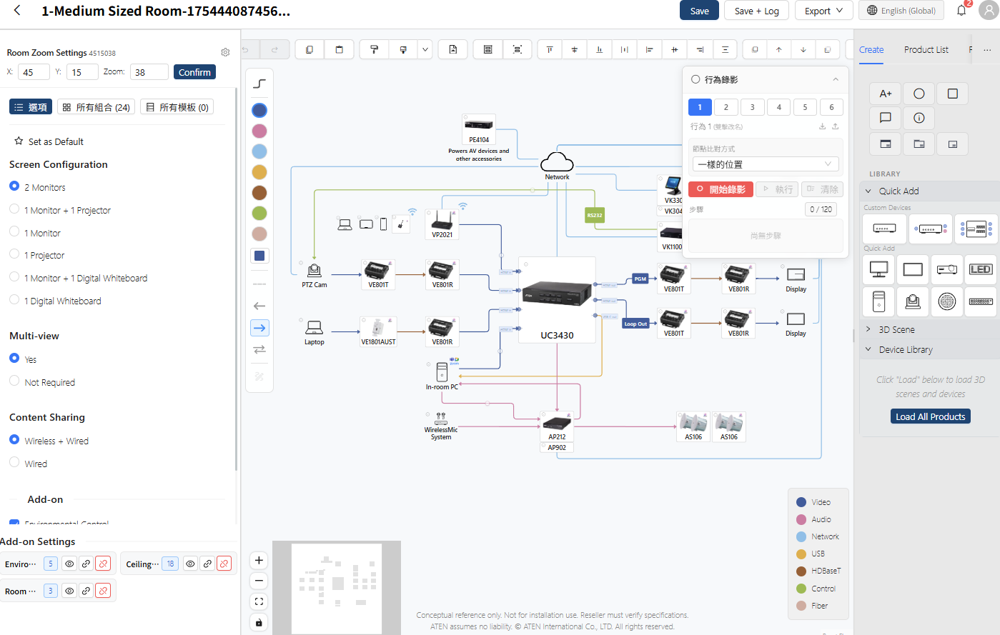
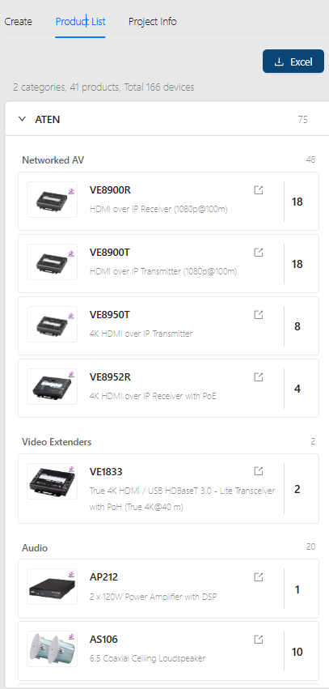
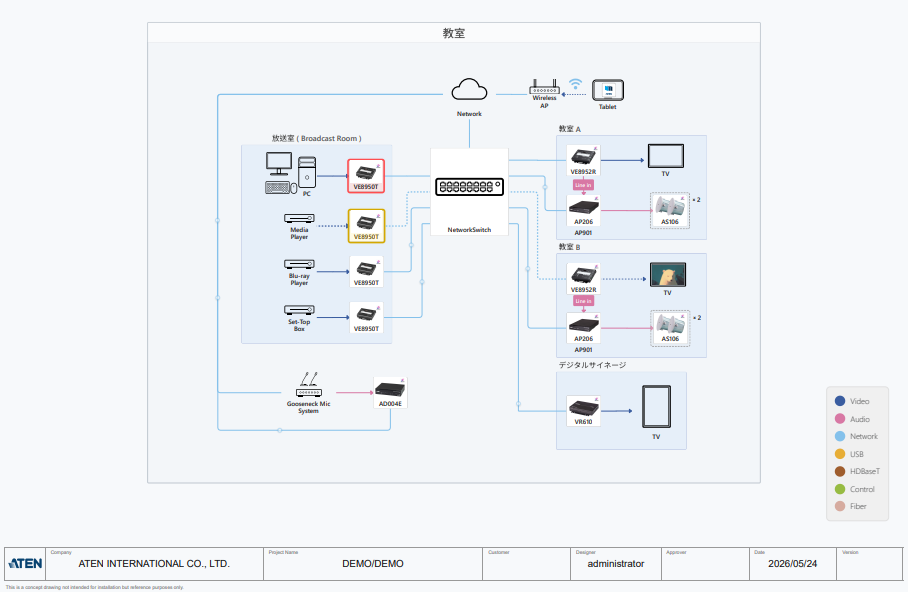

ATEN Solution Builder
2023 – 現在
システムインテグレーター（SI）がキャンバス上で Pro AV 提案を完成させる：
仕様書と Excel から、ビジュアルな結線図とワンクリック納品へ
Solution Builder は B2B 向けのビジュアル提案ツールである。SI はキャンバス上でデバイスをドラッグ＆ドロップして接続を引き、
システムは信号の互換性をリアルタイムに検証し、部品表（BOM）を計算し、最後に顧客へそのまま渡せるドキュメントをワンクリックで出力する。
これは同時に、企業が「製品販売」から「ソリューション販売」へ転換する戦略を、実地に落とし込む受け皿でもある。
本プロジェクトでは、プロダクト定義、UX/UI デザイン、フロントエンド開発、データ分析基盤を担当した——
リサーチの示唆を受け取り、解決策を定義し、自ら実装し、データで検証するまでの一連のループである。
担当領域
プロダクト定義 · UX/UI デザイン · フロントエンド開発（React）· データ分析基盤
ユーザーインタビューはリサーチャーが担当。私はその示唆を受け取り、解決策へと収束させた。
プロジェクト種別
B2B SaaS · ビジュアルエディター · 企業のデジタルトランスフォーメーション

全 3 部構成のシリーズ：本稿は Solution Builder というプロダクトそのもの（戦略・デザイン・フロントエンド工学・データ検証）に焦点を当てる。 残りの 2 本は、このプロダクトを支える独立した技術プロジェクトである： LLM によるプロダクトデータの構造化 と AI Agent：LLM の不確実性を制約する。
3 つの層をまたぐエンドツーエンドの貢献——戦略の翻訳から、プロダクトの実装、そしてデータのクローズドループまで。
ビジネス課題からデザインの問いへ
ビジネス背景
ATEN は世界規模の Pro AV / KVM メーカーで、製品ラインは数千の SKU に及ぶ。従来の SI の提案プロセスは、5 つの段階を経る：
新人 SI にとっては長い学習曲線であり、ベテラン SI にとっては大量の反復作業である。
同時に、長らく代理店に依存してきた販売モデルのため、企業はエンド顧客が本当に必要とするものを把握しづらかった。
そこで戦略は、次の 2 つの方向に絞られた：
市場インサイトを深める
市場の需要とエンドユーザーの実際の状況を直接つかむ能力を構築し、プロダクトの意思決定を実際の利用により近づける。
パートナーの成長を支援する
初級 SI にはソリューション構築の素早い出発点を提供して学習曲線を短縮し、同時にベテラン SI が ATEN の膨大な製品ラインをより効率的に探索・活用できるようにして、案件創出を加速する。
UX の戦略的な問い
「SI の提案のハードルを下げつつ、受注率と追跡可能性をどう高めるか？」
Solution Builder はこの問いへの答えである。デザインにあたって、私はリサーチャーの示唆を
ユーザー類型ごとに異なる 3 つの需要曲線へと再構成した。外部ユーザーは一つのスペクトラム上に位置する：
製品ラインをまだ学んでいるエンドユーザーや新人 SI から、長期的に取引のある代理店やベテランのパートナー SI まで——
同じ SI でも 1 年目と 5 年目では必要なツールの段階が異なる。社内営業はそのスペクトラムの出口に立ち、
外部ユーザーの行動を追跡可能な商談へと変える。
そこで 3 種類の UI を別々に作るのではなく、段階を切り替えられる 1 つのツールを作り、
社内向けの商談トラッキングとユーザー管理のバックオフィスを組み合わせた。
エンドユーザー・新人 SI
課題の本質
現場領域の知識という出発点がない——その種の空間で何が実現でき、どの製品を使えばよいか分からない。空白のキャンバスは、彼らにとって自由ではなく負担である。
戦略：まずテンプレート、次にキャンバス
ログイン不要で閲覧できる 2,000 以上のモジュール式テンプレートが、まず「この種の現場はどんな形になり得るか、 ATEN にどんな対応ソリューションがあるか」に答える。そのうえで、既存の案を修正することから学んでもらう。 エンドユーザーにも SI にも、これは ATEN のソリューション力への自信とブランドへの信頼を同時に積み上げる。
代理店・長期パートナー SI
課題の本質
ボトルネックは知識ではなく検証の効率にある——仕様書をめくって互換性を確認し、納品ドキュメントをまとめる作業に多くの時間がかかる。
戦略：即時フィードバック × エラーを商機に
設計から検証、納品までの完全なツールを提供する：自由なキャンバスでケーブルを引いた瞬間に互換性を検証し、 BOM とドキュメントをワンクリックで出力して、ATEN 製品を中心としたソリューションを素早く組み上げる。 非互換のときは警告するだけでなく、問題を解決するコンバーターも提案する——エラーをネガティブな体験から、新しい製品の発見へと反転させる。
社内営業・子会社の販売
課題の本質
外部ユーザーの行動が「図を描く」で止まれば、営業からは見えない。商談は手作業で CRM へ移す必要があり、追跡しづらい。
戦略：ユーザーを商談へ × 階層管理
「直接問い合わせ」が設計を自動的に Salesforce の商談（Opportunity）へパッケージ化し、該当地域の営業担当へ通知する—— プラットフォームのユーザーが、追跡可能なビジネス機会へ直接変換される。階層型のユーザー管理バックオフィス （Admin / RBU / Area / Sales）と組み合わせ、各地域と子会社が配下のユーザーとグループを管理する。
最初の 1 行を書く前に、システムを 3 層に分ける
着手の時点で、多くの派生シナリオが見込めた：プロダクトセレクター、自由キャンバス、AI 製品検索、結線図ジェネレーター、
現場オーディオ生成ツール、外部 API…… それぞれを個別に作っていては、小さなチームでは支えきれない。
そこで作業を始める前にシステムを 3 層に切り分け、新しいシナリオが既存の能力の組み立てで実現できるようにした（作り直しではなく）。
この土台は、異なる時間軸上の 2 つの問題も同時に解く：リリース後、顧客やステークホルダーからのフィードバックの多くはアプリケーション層に落ちるため、
下層に触れずに迅速に調整できる。一方、プロジェクト初期にデータ層がまだ整備途中のあいだは、エンジン層とアプリケーション層を少量のサンプルデータで開発し、
両者を並行して進め、データが揃っていないことに足を止められなかった。
プロダクトセレクター · 自由キャンバス · AI 製品検索 · AI 結線図生成 · BOM / PDF 出力 · Salesforce 連携
React Flow の深いカスタマイズ · Handle の動的生成 · 互換性チェック · 17 個のカスタム Hook · 純フロントエンドの出力パイプライン
productDatabase.json の単一の信頼できる情報源 · LLM 構造化パイプライン（別稿で詳述）· プロダクト管理バックオフィス
中核となる原則は、下層は上に誰がいるかを知らず、上層は標準インターフェースを通じてのみ下層を消費すること。 層をまたぐ各インターフェース（Schema、Hook API、JSON フォーマット）は、デザイン・エンジニアリング・ビジネスを同時に含む意思決定である—— たとえば Schema は Handle のレンダリングを念頭に設計し、Hook はプロダクトセレクターとキャンバスで共有するニーズを念頭に設計する。
階層化がもたらすレバレッジ
アプリケーション層は、ビジネスの要請に応じて新機能をいつでも生やせる——エンジン層とデータ層は動かさず、新しいシナリオは組み立てで対応する。
すでに本番稼働
シナリオセレクター、AI 製品ソリューションセレクター、結線図エディター——いずれも同じエンジン層とデータ層を消費し、 自分のフローと UI だけを書く。たとえば AI 製品ソリューションセレクターでは、データ層の Schema をそのまま LLM へ渡し、 アプリケーション層はエージェントのプロンプトと推薦 UI を追加するだけでよい。
開発中
結線図ジェネレーター、モジュール式の製品バンドルツール、現場オーディオ生成ツールなど——エンジンはすでに「JSON を読んで図を生成する」能力を持つため、新しいアプリケーションも同様にアプリケーション層で組み立てるだけで、下層に手を入れる必要はない。
外部 API：すでに部門横断で活用
アプリケーション層とエンジン層の通信は当初から JSON として定義されており、Schema はすでに安定した契約である——現在 FAE チームの AI サポートがこの API を直接利用しており、階層化の恩恵はチームと部門の枠を越えて広がっている。
中核機能とデザインの意思決定
機能 1：ビジュアル結線図エディター
プロダクトの中核キャンバス
3 カラムのレイアウト：左にデバイスライブラリ（検索 + カテゴリ + ドラッグ）、中央に React Flow のキャンバス、右にプロパティパネル。 上部のツールバーには Undo / Redo / Save / Export の 4 つだけを置き、高度な機能は右クリックメニューに収めた。 信号カラーコードの凡例（Legend）を右下に常駐させ、初心者でもルールを覚えずに図を読める。

カスタムノードと動的なポート
React Flow の標準ノードは Pro AV のセマンティクスを担えない——1 台の Matrix Switcher は 30 以上の I/O を持ち得る。 各ノードのポート（Handle）は productDatabase.json の Schema から動的に生成され、 信号タイプ・帯域・解像度などの属性を持ち、接続時の互換性チェックに使われる。 ポートは Video / Audio / USB / Control / Network ごとにグループ表示され、「HDMI 出力」を探すときは Video グループだけを見ればよい。

ユーザーは Custom Device を作成してサードパーティ機器を設計に描き込むこともできる——これらの型番は管理画面に記録され、 R&D が市場のギャップを理解するための材料になる（成果を参照）。顧客向けのプレゼン用途には、3D パース風のノードも用意した。
信号カラーコードと接続
接続は信号タイプに応じて 7 色のカラーコードを自動適用する（企業既存の信号カラー規格を踏襲。本プロジェクトの仕事は、それを Handle・接続・BOM・凡例に行き渡らせることだった）。トポロジーに応じて Bezier / Step / Straight の 3 つのエッジスタイルを提供し、 同色の接続が交差するときは半円のホップ記号を自動で描画して、複雑なトポロジーでも絡まないようにする。

複雑さの階層化：強制露出ではなく、自発的な深掘り
機器の仕様は情報量が膨大なため、デザインは段階的開示を採る：既定ではデバイスのアイコンだけ（L0）、ホバーで Handle が現れ（L1）、 「ポート表示」をクリックすると全ポートが展開し（L2）、モーダルを開くと完全な仕様が見え（L3）、必要なときだけメーカーのデータシートに至る（L4）。 Port Visibility の粒度は「映像ポートはオン、音声ポートはオフ」まで細かく、熟練者は今の作業に関係する信号だけを見られる。

Frame と Group ×N：大規模な設計を整理する
設計が「1 つの会議室」から「12 の教室 + サーバールーム + コントロールセンター」へ拡大すると、ノードを積み上げるだけでは画面が破綻する。 Frame は Figma のメンタルモデルを借りて空間を区分けし、Group ×N は SI が代表的な部屋を 1 つ設計すれば、数量の乗算はシステムが処理する——外側 ×4 の会議室、内側 ×2 のスピーカーで、 BOM は自動的に 8 個と算出する。設計の責任と数量の責任を分離する。

機能 2：テンプレートシステム
フロントの製品セレクター + 管理画面のセルフ入稿
テンプレートから始める
初心者が利用シーン（会議室、教室…）を選ぶと、システムは推奨機器と既定の接続をすでに含む下書きを生成する——あとは微調整するだけ。 プロダクトセレクターは一度きりのチュートリアルではなく、常駐する出発点である：テンプレート生成後はすべての要素が編集可能で、カスタムテンプレートとして保存できる。 熟練者も素早い初稿に使い、ベテランの専門家には「白紙から始める」を常に残している。
2,000 以上のテンプレートを生み出す管理画面
テンプレートライブラリはすでに 2,000 以上のモジュール式テンプレートを蓄積している——この量はデザイナー 1 人で支えられるものではない。
コンテンツはプロダクト企画担当が管理画面を通じて継続的に入稿・維持する。私の担当は、入稿を容易にするデータ構造と編集ツールだった——
エンジニア出身でない企画担当でも、部屋・シーン・接続設定を維持でき、そのたびにエンジニアにコード修正を頼まずに済む。
テンプレートの図編集はメインエディターと同じコンポーネントを流用しており、企画担当が管理画面で作ったものは、フロントの SI が見るのと同じノードと接続である。
入稿に加え、管理画面には運用効率を高める専用ツールも順次備えてきた——操作録画、テンプレートとオプションの組み合わせ管理、バッチ処理——
これらの設計と開発により、テンプレート数が増え続けても維持・検証のコストが暴走しないようにした。

機能 3：ワンクリック納品
提案の最後の 1 マイルを自動化する
BOM のリアルタイム計算
製品リストはキャンバスとともにリアルタイムで更新される：ノードの増減も Group ×N の調整も即座に反映され、 ブランドとカテゴリで自動的にグループ化し、非表示ノードを除外する。合計行は、営業がそのままざっくり見積もるのに使える。

Excel 見積書と PDF システム図
ワンクリックで、企業公式テンプレートを適用した Excel 見積書（顧客情報と見積項目を含む）と、 表紙・案件情報・信号凡例・透かしを備えた PDF のシステム結線図を出力する—— 顧客へそのまま渡せ、追加の加工は不要。出力は純フロントエンドのパイプライン（html-to-image + jsPDF）を採り、バックエンドに依存しない。

デザインと開発の境界を越える
このプロジェクトの工数は、本来であれば複数のフロントエンドエンジニアの協働を要する規模である。極小のチームで納品できたのは、 前述の 3 層アーキテクチャに加え、AI を日々の開発フローに取り込んだことによる——アーキテクチャと UX の意思決定が同じ頭の中で揃い、 デザインとエンジニアリングの間の引き継ぎロスをなくした。
フロントエンドアーキテクチャ
React 18 + @xyflow/react の深いカスタマイズ
React 18 + Vite + React Router、UI は Ant Design に Tailwind で細部を上書きする。 状態管理に Redux は使わず、責務で分離した 17 個のカスタム Hook （履歴、グループ、整列・スナップ、Handle 管理…）を用い、各 Hook が明確な API を公開する。 アプリケーション層はそのうち一部だけを組み立てられる——たとえば公開閲覧ページは Render と Zoom だけを読み込み、編集関連の Hook は読み込まない。
React Flow カスタマイズのハイライト
ポートはハードコードせず、productDatabase.json から動的にレンダリングする。だからこそ専門家が引く各種のエッジケース（4K を 1080p へ、HDMI を HDBaseT 越しに）にも対応できる。
ケーブルを引いた瞬間に両端のポート属性を読み、リアルタイムで検証する。非互換のときは警告を示し、コンバーター製品を提案する。チェックのロジックは一度だけ、エンジン層に書き、あらゆる利用シーンで共有する。
同色エッジの交点を計算し、上側のエッジにホップ記号を描画するアルゴリズム。
パフォーマンスとエンジニアリングの詳細
数千の SKU に対し、バッチリクエストで分割読み込みする。アプリは数秒で操作可能になり、完全なデバイスライブラリはバックグラウンドで補完される。
未保存のキャンバスからも BOM を直接ダウンロードできる——バックエンドが一時プロジェクトを即時に作成し、計算・出力・削除を行い、ワークスペースに孤立プロジェクトを残さない。
テンプレートの全オプションの組み合わせを自動生成し、それぞれに検証アクションを実行する。2,000 以上のテンプレートの維持コストを管理可能に保つ。
管理画面：プロダクトマネージャー
数千 SKU の仕様は、自由記述ではなく構造化されたフォームで維持する。フィールドのグループは productDatabase.json の Schema に直接対応する——デザインとデータ構造が同時に形になる。クロスフィルタとバッチ更新を備え、 製品データの維持は「エンジニアリングの納品物」から「営業のセルフサービス」へ変わる。

関連記事（それぞれ独立した稿）：データ層の鍵は、PDF / HTML に散らばり形式の異なる数千件の製品仕様を、 GPT-4o + プロンプトエンジニアリングで標準化された JSON へ構造化することにある——詳しくは LLM によるプロダクトデータの構造化 を参照。 アプリケーション層の AI Agent が不確実性をどこに置くか——詳しくは AI Agent：LLM の不確実性を制約する を参照。
社内ツールから外部サービスへ、そしてデータのクローズドループへ
事業の拡大
Solution Builder は社内ツールから、企業が対外的に公開する正式な SaaS サービスへと発展し、 世界各地の子会社に教育研修と営業推進の統一ツールとして採用された。 ログイン不要のテンプレート閲覧は、馴染みのない SI の参入障壁を下げる。設計の完成後の「直接問い合わせ」は、 設計 JSON・BOM・キャンバスのスクリーンショットを自動的に Salesforce の商談へパッケージ化し、営業が引き継ぐときには完全な文脈がすでに揃っている。
プラットフォーム上の「図を描く」行為が、そのまま CRM 内の追跡可能な商談になる——営業が手作業でデータを移す必要はない。

データアーキテクチャ：デザイン段階で Event Schema を定義する
計測は後付けではない。デザインの成果物は、ワイヤーフレームとインタラクション仕様から 3 点へ拡張した—— Event Spec を加え、各インタラクティブ要素に対応するイベントを Figma 上で注記する。 イベントはセマンティックに命名し、階層化する（ビジネスイベント / インタラクションイベント / Debug）。そして必ず context を伴う： たとえば device_added は、製品がどこから追加されたか（検索 / テンプレート / AI 推薦）を記録し、 「AI が提案した製品は本当に採用されたか？」のような具体的な問いに答えられるようにする。
データフロー：フロントエンドの GTM イベント → GA4 → BigQuery（クロスセッション分析、CRM データの結合）→ PowerBI。マーケティング・R&D・UX の 3 つのダッシュボードに分け、3 つの意思決定者グループに対応する。
実際の 2 つのクローズドループ事例
製品追加 · テンプレート利用 · Custom Device 作成 → セマンティックイベント
GA4 · BigQuery → インサイト
ダッシュボードでのセグメント → ビジネス／R&D アクション
バンドル · 新製品評価
人気の製品組み合わせ → バンドル施策
BigQuery を使って、1 つの設計の中で最も一緒に現れる製品ペアを見つけ出し、マーケティングはそれをもとにバンドル提供を打ち出し、その組み合わせを SI 研修の標準推奨構成にも組み込んだ。
サードパーティ機器のギャップ → R&D による評価
Custom Device のイベントを追跡したところ、ある種のサードパーティ機器が頻繁に追加されていることが分かった——しかもこれらのユーザーの設計にはすでに自社製品が複数含まれており、足りないのは顧客ではなく製品だった。この「ギャップのシグナル」を R&D へ還元し、新製品企画化の判断材料とした。ユーザー行動そのものが、継続的な市場調査になる。
正確な売上や社内データは NDA の制約があり、本稿では公開可能な範囲のみを開示する。
デザイン・エンジニアリング・データを 1 人の中で揃える
Solution Builder が示すのは、1 つの働き方である：Schema を設計するときはフロントエンドがどう消費するかを念頭に置き、
インタラクションを設計するときに計測を同時に定義し、機能を設計するときにビジネスファネル上の位置に対応させる。
UX が下層のデータとアーキテクチャを掌握すれば、「支援部門」から「プロダクトの意思決定」へと踏み込める——
このプロジェクトにおける 3 層アーキテクチャ、互換性チェック、データのクローズドループは、いずれもこの領域横断の統合がもたらした産物である。
この働き方を支えるのは、AI ツールと開発フローの深い結合である：LLM のデータパイプラインから日々の AI 協働開発まで、
プロダクト開発のテンポが速まり、本来なら複数の開発人員を要したときのデザインとエンジニアリング間の往復コストも省ける——
だからこそ、社内ツールが極小のチームの手で、成熟した対外プロダクトサービスへと育ち得た。